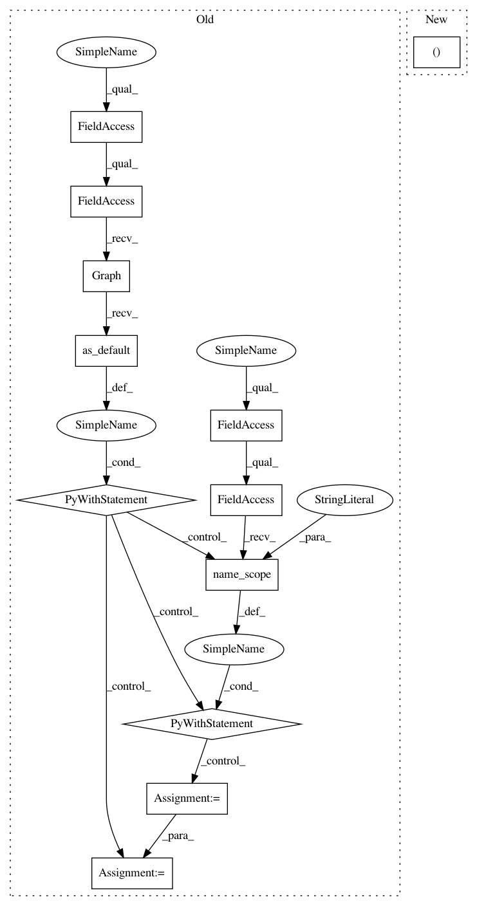

97507c4871dff5fb5e4bd33d2f5cf3f8bd3aceba,tensorflow_transform/beam/combiner_packing_util_test.py,CombinerPackingUtilTest,test_perform_combiner_packing_optimization,#CombinerPackingUtilTest#Any#Any#Any#Any#Any#,362
Before Change
self, feature_spec, preprocessing_fn, num_phases,
expected_dot_graph_str_before_packing,
expected_dot_graph_str_after_packing):
with tf.compat.v1.Graph().as_default() as graph:
with tf.compat.v1.name_scope("inputs"):
input_signature = impl_helper.feature_spec_as_batched_placeholders(
feature_spec)
output_signature = preprocessing_fn(input_signature)
def _side_effect_fn(
saved_model_future, cache_value_nodes, unused_num_phases):
return (saved_model_future, cache_value_nodes)
with mock.patch.object(
combiner_packing_util, "perform_combiner_packing_optimization",
side_effect=_side_effect_fn):
transform_fn_future_before, unused_cache = analysis_graph_builder.build(
graph, input_signature, output_signature)
transform_fn_future_after, unused_cache = (
combiner_packing_util.perform_combiner_packing_optimization(
transform_fn_future_before, unused_cache, num_phases))
dot_string_before = nodes.get_dot_graph(
[transform_fn_future_before]).to_string()
self.assertMultiLineEqual(
msg="Result dot graph is:\n{}".format(dot_string_before),
After Change
expected_dot_graph_str_before_packing,
expected_dot_graph_str_after_packing):
graph, structured_inputs, structured_outputs = (
impl_helper.trace_preprocessing_function(
preprocessing_fn, feature_spec, use_tf_compat_v1=True))
In pattern: SUPERPATTERN
Frequency: 3
Non-data size: 12
Instances
Project Name: tensorflow/transform
Commit Name: 97507c4871dff5fb5e4bd33d2f5cf3f8bd3aceba
Time: 2020-09-01
Author: varshaan@google.com
File Name: tensorflow_transform/beam/combiner_packing_util_test.py
Class Name: CombinerPackingUtilTest
Method Name: test_perform_combiner_packing_optimization
Project Name: tensorflow/transform
Commit Name: 97507c4871dff5fb5e4bd33d2f5cf3f8bd3aceba
Time: 2020-09-01
Author: varshaan@google.com
File Name: tensorflow_transform/beam/analysis_graph_builder_test.py
Class Name: AnalysisGraphBuilderTest
Method Name: test_build
Project Name: tensorflow/transform
Commit Name: 97507c4871dff5fb5e4bd33d2f5cf3f8bd3aceba
Time: 2020-09-01
Author: varshaan@google.com
File Name: tensorflow_transform/beam/impl.py
Class Name: _AnalyzeDatasetCommon
Method Name: expand
Project Name: tensorflow/transform
Commit Name: 97507c4871dff5fb5e4bd33d2f5cf3f8bd3aceba
Time: 2020-09-01
Author: varshaan@google.com
File Name: tensorflow_transform/beam/combiner_packing_util_test.py
Class Name: CombinerPackingUtilTest
Method Name: test_perform_combiner_packing_optimization